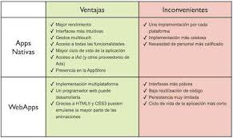

CSS3
CSS3
Para que sirve CSS3?
El CSS sirve para definir la estética de un sitio web en un documento externo y eso mismo permite que modificando ese documento (la hoja CSS) podamos cambiar la estética entera de un sitio web, el mismo sitio web puede variar totalmente de estética cambiando solo la CSS, sin tocar para nada los documentos HTML o jsp o asp que lo componen.
CSS es un lenguaje utilizado para dar estética a un documento HTML (colores, tamaños de las fuentes, tamaños de elemento, con css podemos establecer diferentes reglas que indicarán como debe presentarse un documento. Podemos indicar propiedades como el color, el tamaño de la letra, el tipo de letra, si es negrita, si es itálica, también se puede dar forma a otras cosas que no sean letras, como colores de fondo de una pagina, tamaños de un elemento (por ejemplo el alto y el ancho de una tabla.
Caracteristicas principales de CCS3
- Atributo gradiente de colores en borde con CSS y Firefox: Posibilidad de definir el un gradiente de color en el borde de los elementos con CSS, en un atributo no estándar de Firefox.
- Bordes redondeados en CSS 3: Las características de CSS 3 incluyen bordes redondeados, a través del atributo border-radius, que define la curvatura que debe tener el borde del elemento.
- Múltiples imágenes de fondo con CSS: Cómo conseguir que un elemento de la página tenga varias imágenes de fondo a la vez, con CSS básico y con características de CSS 3.
- Colores RGBA en CSS 3: Veremos qué son los colores RGBA y su notación, que se incluyen en la especificación de Hojas de Estilo en Cascada CSS 3.
- Word-wrap en CSS 3: Una propiedad de CSS 3 que sirve para romper las palabras que son demasiado largas y no caben enteras por la anchura de una caja.
- Textos multi-columna con CSS 3: CSS 3 incorpora nuevos atributos para que el navegador se encargue de producir texto multicolumna, es decir, que maquete directamente el texto en varias columnas sin tener que hacer nosotros nada.
- Bordes con imágenes en CSS 3: El atributo border-image y varios otros de CSS 3 harán posible la utilización de imágenes como bordes de los elementos de la página, sin código HTML especial, simplemente con hojas de estilo.
- Sombras en CSS 3 con box-shadow: Crear sombras en CSS3 con el atributo box-shadow. Por fin podremos aplicar sombras a los elementos de la página, sin usar imágenes, Javascript ni nada extra, simplemente con un atributo de CSS 3.
- Resplandor exterior con CSS3: Cómo realizar un elemento que tenga un resplandor exterior con CSS3 y la propiedad box-shadow.
- Propiedad background-origin de CSS 3: La propiedad de CSS 3 background-origin permite decidir la posición de la imagen de fondo con respecto al borde, padding o el contenido del elemento.
- Atributos CSS3 overflow-x y overflow-y: Descripción de los atributos de CSS3 overflow-x y overflow-y, que sirven para definir cómo renderizar un contenido cuando sobrepasa los límites de un contenedor en la horizontal o vertical.
- ntroducción a @font-face de CSS: Fuentes en CSS 3. Sintaxis y principales características de la regla CSS @font-face, que nos permite utilizar cualquier tipografía en una página web.
- Sombras en el texto con text-shadow de CSS: Cómo aplicar sombras y otros efectos en los textos con CSS y el atributo text-shadow.

|
MATERIALES
https://www.ecured.cu/CSS3#:~:text=CSS3%20es%20un%20lenguaje%20usado,y%20por%20extensi%C3%B3n%20en%20XHTML).